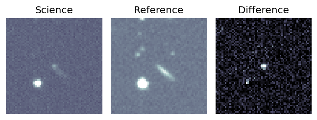

Candidate List 20250730 Previous Day Next Day Section 1: New Sources (age<1d) Cosmological Afterglow
Section 2: Old (1-5d) sources observed last night placeholder
Section 1: New Afterglow/FBOT Cands Last Night (0)
Section 2: Older Sources Observed Last Night (23)
0. ZTF25abdfbom (Afterglow?) [Back to Top] [Share] [Trigger Swift] [Fritz ] [Lasair ]RA, Dec: 15.43666, 42.96781 1h 1m44.80s, 42d58m4.12sGalactic (l, b): 124.93677, -19.8638 ext(g-r) = 0.093peak abs mag = -19.99 PS1: 1 source in 3 arcsec Closest: d = 5.03 arcsec photoz=0.15+/-0.06 peak abs mag = -20.50 Consistent with synchrotron, g-r>0!
1. ZTF25abdfcks (Afterglow?) A ) [Back to Top] [Share] [Trigger Swift] [Fritz ] [Lasair ]RA, Dec: 333.88565, -21.34218 22h15m32.56s, -21d-20m-31.83sGalactic (l, b): 33.54682, -54.13575 ext(g-r) = 0.041
2. ZTF25abdkljn (Afterglow?) [Back to Top] [Share] [Trigger Swift] [Fritz ] [Lasair ]RA, Dec: 274.21001, -5.18525 18h16m50.40s, -5d-11m-6.89sGalactic (l, b): 24.34193, 5.28366 ext(g-r) = 1.197
3. ZTF25abdtpbf (Afterglow?) [Back to Top] [Share] [Trigger Swift] [Fritz ] [Lasair ]RA, Dec: 255.50577, -24.85555 17h 2m1.38s, -24d-51m-19.97sGalactic (l, b): 357.93707, 10.33422 ext(g-r) = 0.356
4. ZTF25abdzkae (FBOT?) [Back to Top] [Share] [Trigger Swift] [Fritz ] [Lasair ]RA, Dec: 266.82562, 29.26902 17h47m18.15s, 29d16m8.47sGalactic (l, b): 54.13579, 25.93633 ext(g-r) = 0.067LegacySurvey: 1 sources in 3 arcsec Closest: d = 1.26 arcsec, 289.8 deg (east of north) photoz=0.3 (68% bounds 0.2, 0.49), type=EXP peak abs mag = -21.75 (68% bounds -20.73, -23.01)
5. ZTF25abdzmti (Afterglow?) [Back to Top] [Share] [Trigger Swift] [Fritz ] [Lasair ]RA, Dec: 280.25217, -5.1144 18h41m0.52s, -5d-6m-51.83sGalactic (l, b): 27.19287, -0.01855 ext(g-r) = 24.098
6. ZTF25abdzoyf (Afterglow?) [Back to Top] [Share] [Trigger Swift] [Fritz ] [Lasair ]RA, Dec: 293.47266, -12.89554 19h33m53.44s, -12d-53m-43.95sGalactic (l, b): 25.98387, -15.16178 ext(g-r) = 0.217PS1: 1 source in 3 arcsec Closest: d = 4.44 arcsec photoz=0.95+/-0.62 peak abs mag = -27.49
7. ZTF25abeckqg (FBOT?) [Back to Top] [Share] [Trigger Swift] [Fritz ] [Lasair ]RA, Dec: 324.16503, 46.544 21h36m39.61s, 46d32m38.39sGalactic (l, b): 91.72987, -4.18933 ext(g-r) = 0.521
8. ZTF25abeqorz (FBOT?) [Back to Top] [Share] [Trigger Swift] [Fritz ] [Lasair ]RA, Dec: 195.33232, 4.23164 13h 1m19.76s, 4d13m53.91sGalactic (l, b): 309.24959, 66.98198 ext(g-r) = 0.03peak abs mag = -20.96 LegacySurvey: 1 sources in 3 arcsec Closest: d = 1.06 arcsec, 259.8 deg (east of north) photoz=0.09 (68% bounds 0.05, 0.14), type=SER peak abs mag = -19.0 (68% bounds -17.78, -19.96)
9. ZTF25abeuvaa (FBOT?) [Back to Top] [Share] [Trigger Swift] [Fritz ] [Lasair ]RA, Dec: 327.90779, -27.248 21h51m37.87s, -27d-14m-52.81sGalactic (l, b): 22.06467, -50.23943 ext(g-r) = 0.033PS1: 1 source in 3 arcsec Closest: d = 1.16 arcsec photoz=0.34+/-0.29 peak abs mag = -22.30
10. ZTF25abewmjr (FBOT?) [Back to Top] [Share] [Trigger Swift] [Fritz ] [Lasair ]RA, Dec: 337.98148, 32.6787 22h31m55.56s, 32d40m43.32sGalactic (l, b): 91.75251, -21.61408 ext(g-r) = 0.091peak abs mag = -20.04 LegacySurvey: 1 sources in 3 arcsec Closest: d = 1.10 arcsec, 302.0 deg (east of north) photoz=0.1 (68% bounds 0.07, 0.16), type=EXP peak abs mag = -19.34 (68% bounds -18.54, -20.4)
11. ZTF25abewrxj (Afterglow?) [Back to Top] [Share] [Trigger Swift] [Fritz ] [Lasair ]RA, Dec: 5.54352, 34.76596 0h22m10.45s, 34d45m57.47sGalactic (l, b): 116.14536, -27.71986 ext(g-r) = 0.06peak abs mag = -17.05 PS1: 1 source in 3 arcsec Closest: d = 4.49 arcsec photoz=0.06+/-0.01 peak abs mag = -17.72 Consistent with synchrotron, g-r>0!
12. ZTF25abeyogz (FBOT?) [Back to Top] [Share] [Trigger Swift] [Fritz ] [Lasair ]RA, Dec: 327.51972, -10.43359 21h50m4.73s, -10d-26m-0.91sGalactic (l, b): 45.35054, -44.25132 ext(g-r) = 0.042LegacySurvey: 1 sources in 3 arcsec Closest: d = 0.13 arcsec, 170.7 deg (east of north) photoz=0.23 (68% bounds 0.14, 0.34), type=REX peak abs mag = -20.28 (68% bounds -19.03, -21.24) Consistent with synchrotron, g-r>0!
13. ZTF25abffzis (Afterglow?) [Back to Top] [Share] [Trigger Swift] [Fritz ] [Lasair ]RA, Dec: 284.38692, -18.77419 18h57m32.86s, -18d-46m-27.10sGalactic (l, b): 16.7345, -9.74215 ext(g-r) = 0.237
14. ZTF25abfgbdx (FBOT?) [Back to Top] [Share] [Trigger Swift] [Fritz ] [Lasair ]RA, Dec: 270.53387, -14.82338 18h 2m8.13s, -14d-49m-24.17sGalactic (l, b): 14.11668, 3.84177 ext(g-r) = 1.29PS1: 1 source in 3 arcsec Closest: d = 0.20 arcsec photoz=0.91+/-0.09 peak abs mag = -26.88
15. ZTF25abfnnqx (FBOT?) [Back to Top] [Share] [Trigger Swift] [Fritz ] [Lasair ]RA, Dec: 184.78712, 28.24325 12h19m8.91s, 28d14m35.70sGalactic (l, b): 202.20289, 82.76688 ext(g-r) = 0.025LegacySurvey: 1 sources in 3 arcsec Closest: d = 1.72 arcsec, 93.6 deg (east of north) photoz=0.14 (68% bounds 0.09, 0.23), type=SER peak abs mag = -20.21 (68% bounds -19.16, -21.32)
16. ZTF25abfnwcy (Afterglow?FBOT?) [Back to Top] [Share] [Trigger Swift] [Fritz ] [Lasair ]RA, Dec: 276.76318, -17.37681 18h27m3.16s, -17d-22m-36.51sGalactic (l, b): 14.73134, -2.63531 ext(g-r) = 1.172PS1: 1 source in 3 arcsec Closest: d = 0.38 arcsec photoz=0.05+/-0.11 peak abs mag = -21.59 Consistent with synchrotron, g-r>0!
17. ZTF25abfnxnl (Afterglow?FBOT?) [Back to Top] [Share] [Trigger Swift] [Fritz ] [Lasair ]RA, Dec: 261.71957, -23.34165 17h26m52.70s, -23d-20m-29.94sGalactic (l, b): 2.47291, 6.54801 ext(g-r) = 1.122PS1: 1 source in 3 arcsec Closest: d = 1.24 arcsec photoz=0.32+/-0.01 peak abs mag = -26.67
18. ZTF25abfoioj (Afterglow?) [Back to Top] [Share] [Trigger Swift] [Fritz ] [Lasair ]RA, Dec: 310.96189, -6.31303 20h43m50.85s, -6d-18m-46.89sGalactic (l, b): 40.44461, -27.82845 ext(g-r) = 0.049LegacySurvey: 1 sources in 3 arcsec Closest: d = 0.72 arcsec, 103.0 deg (east of north) photoz=0.05 (68% bounds 0.02, 0.09), type=PSF peak abs mag = -16.72 (68% bounds -14.92, -18.21) Consistent with synchrotron, g-r>0!
19. ZTF25abfqboc (Afterglow?) [Back to Top] [Share] [Trigger Swift] [Fritz ] [Lasair ]RA, Dec: 1.26834, 39.88193 0h 5m4.40s, 39d52m54.96sGalactic (l, b): 113.35096, -22.12569 ext(g-r) = 0.106
20. ZTF25abfsaux (Afterglow?) [Back to Top] [Share] [Trigger Swift] [Fritz ] [Lasair ]RA, Dec: 335.57176, 34.67364 22h22m17.22s, 34d40m25.10sGalactic (l, b): 91.16733, -18.83945 ext(g-r) = 0.122PS1: 1 source in 3 arcsec Closest: d = 2.38 arcsec photoz=0.66+/-0.09 peak abs mag = -23.44 Consistent with synchrotron, g-r>0!
21. ZTF25abfsbvr (Afterglow?FBOT?) [Back to Top] [Share] [Trigger Swift] [Fritz ] [Lasair ]RA, Dec: 340.07504, 34.0085 22h40m18.01s, 34d 0m30.61sGalactic (l, b): 94.1049, -21.42024 ext(g-r) = 0.076LegacySurvey: 1 sources in 3 arcsec Closest: d = 2.44 arcsec, 277.8 deg (east of north) photoz=0.24 (68% bounds 0.2, 0.4), type=PSF peak abs mag = -20.99 (68% bounds -20.51, -22.21) Consistent with synchrotron, g-r>0!
22. ZTF25abfsftt (Afterglow?) [Back to Top] [Share] [Trigger Swift] [Fritz ] [Lasair ]RA, Dec: 346.1087, -12.03947 23h 4m26.09s, -12d-2m-22.11sGalactic (l, b): 58.70875, -60.73475 ext(g-r) = 0.041LegacySurvey: 1 sources in 3 arcsec Closest: d = 7.43 arcsec, 89.8 deg (east of north) photoz=0.52 (68% bounds 0.45, 0.58), type=EXP peak abs mag = -22.93 (68% bounds -22.52, -23.2)